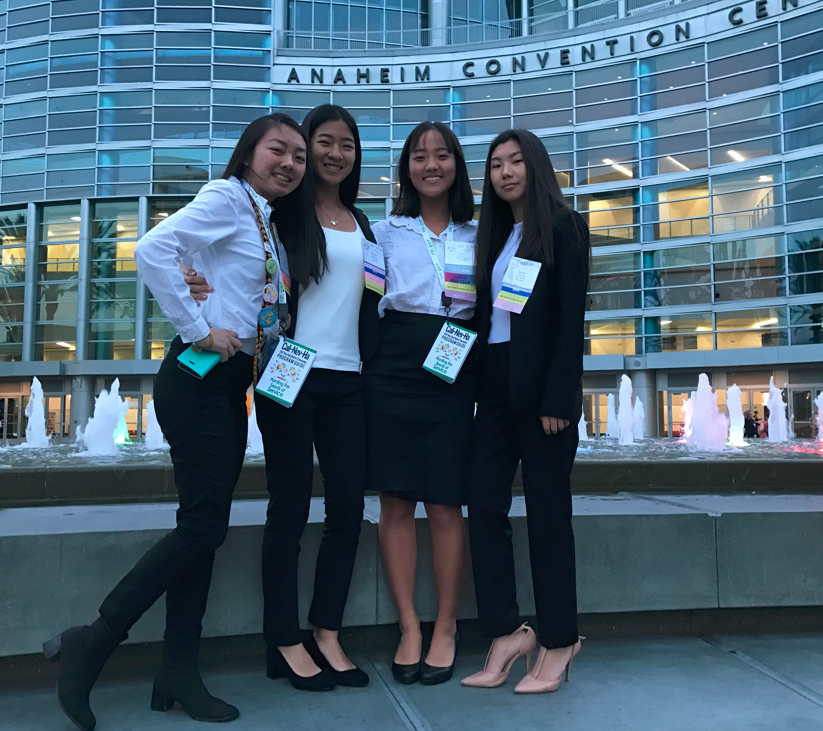
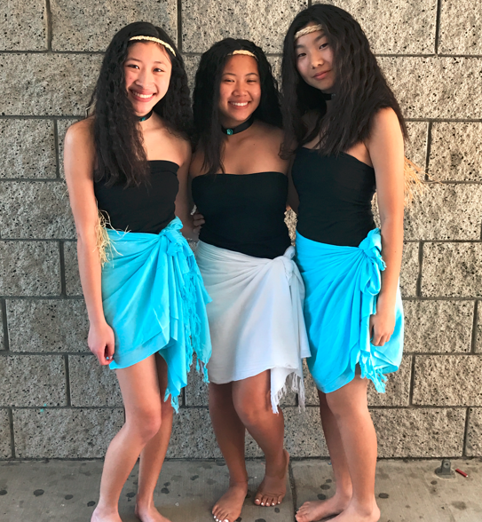
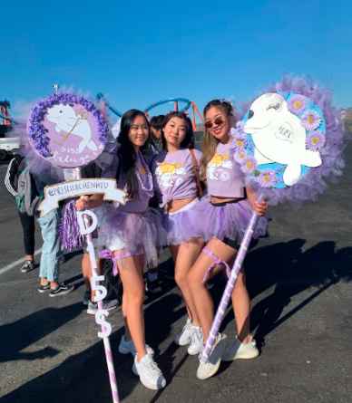
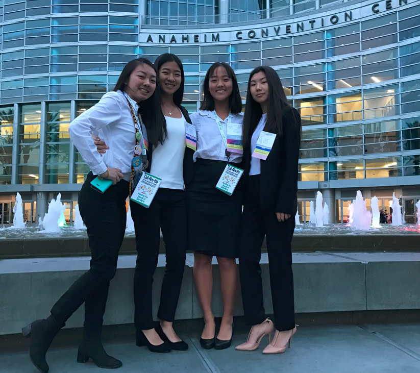
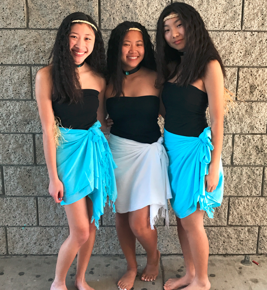
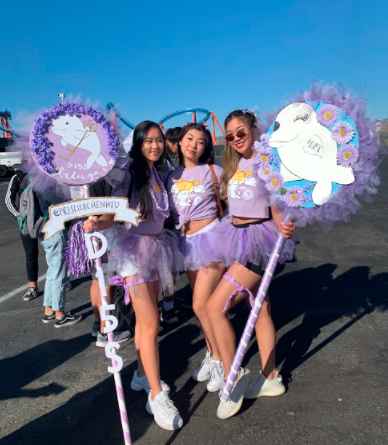
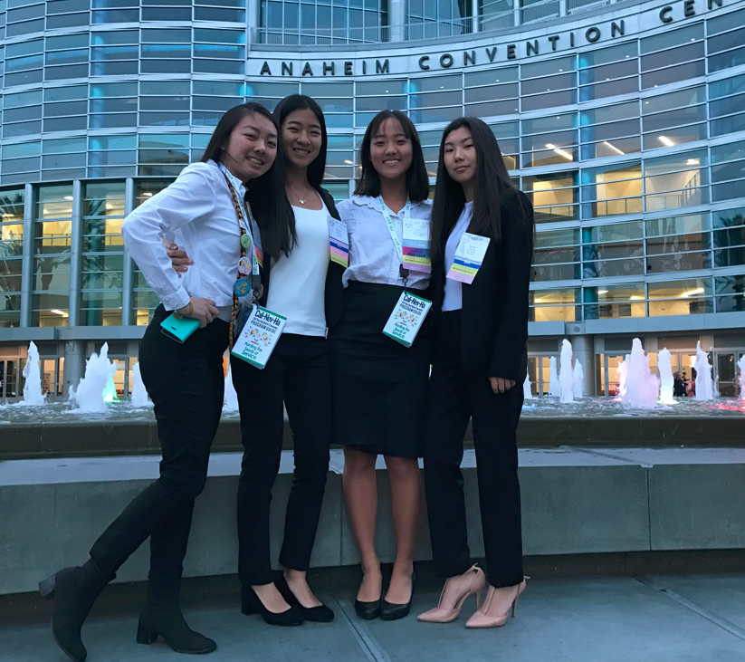
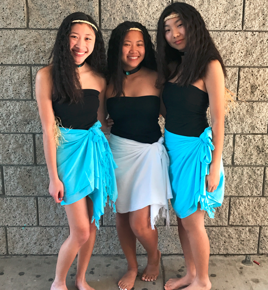
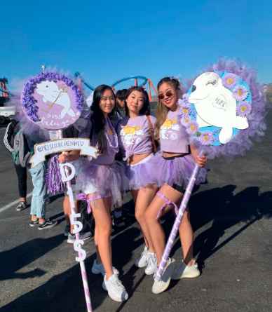

Rachel Kim
Hello. I’m currently a second year undergraduate student attending University of California, Riverside working towards completing my Political Science/International Affairs degree in the College of Humanities, Arts, and Social Sciences. I am also planning to get a minor in Marketing. I’m planning to apply to graduate school to further my education and receive a masters in Political Science. As of now, I currently have retained a 4.0 gpa through my first year of college and am planning to continue succeeding to prepare for my future. My goal is to become involved in international trade relations and be aware of the international market. I am interested in how politics and business are intertwined and a part of everyone’s lives. You can tell through the economy how countries' political states are and vice versa. The relationship between countries and our politicians affects everyone around the world. I am also interested in learning more about investments and learning how to invest in the international stock market. I feel that the knowledge you gain from investing deepens your understanding of the state of the world through economics.
I’m planning to expand and take use of the opportunities available to me on campus by becoming more involved in my school environment. For this reason, I will be applying to be a part of the student board association on UCR campus. This organization is involved in school events and giving a voice to the students on campus. Additionally, I am hoping to find an internship in a business environment that will expand my knowledge and further prepare my mind for my future career. I have been involved in Key Club during all four years of high school. During my time, I’ve accumulated more than 100+ service hours through weekly service events such as Isaiah's Rock, God’s Pantry, and volunteering for special school events for elementaries and high schools. I also received an award for dedication to service for completing more than 100 hours of service as a result of my dedication.I believe that balance is key to success. As a result, I enjoy journaling, organizing, reading, and eating good food as a way to wind down after busy times. Giving myself time to enjoy my free time is essential to the success of my grades and my balanced college career thus far. Planning ahead is important in order to prepare for any obstacles that may come in the future.
While I haven’t progressed much into my professional career, I have worked to gain leadership experience through various different outlets. Some of these include being a cashier and server for over three years and becoming founding members of my high school's Filipino Culture Club.These experiences have given me a better perspective on interacting with people and leading people with the right mindset. I enjoy meeting new people, hearing their stories, and learning how they live their lives. Overall, it has been an enriching experience to be involved in my community and with my fellow peers.
Experience
Cashier/Server
• In charge of serving customers, keeping the front/kitchen tidy, counting the money drawer, and managing cooking
orders.
•Responsible for counting out the money drawer and calculating the correct tip split for each employee at the end
of our shifts.
Cashier
• Took orders, served food, kept the dining area clean, stocked up drinks and ingredients.
• Learned to work in a fast-paced environment and tend to customers with quality service
Public Relations Officer
• Sent out weekly announcements and reminders for upcoming events and general meetings.
• In charge of social media account and posting actively for members.
• Kept track of member sign in and attendance to general meetings
Education
University of California, Riverside
Portfolio
 







